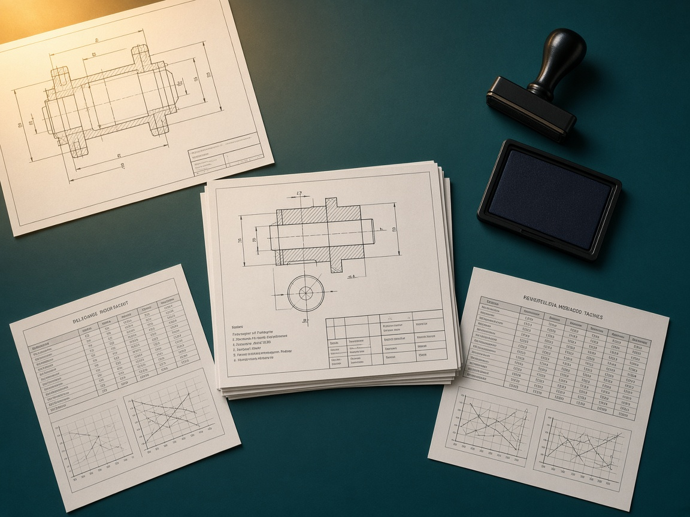

Mumbai manufacturers European market access
CE Certification & CE Marking Services in Mumbai
Prepare your product for the European market with the right CE compliance pathway — not a generic certificate, and not a logo applied too early.
Are you a manufacturer, exporter or product company in Mumbai, Navi Mumbai, Thane or the surrounding industrial belt planning to sell products in the European market? Sustainable Futures PCS provides CE marking and product compliance support across Mumbai and nearby industrial areas.
- Product-specific CE assessment
- EU legislation mapping
- Notified Body coordination where required
01 — Product review
Looking for CE certification in Mumbai?
CE marking requirements are different for different products. The correct regulatory pathway depends on factors including product category, intended use, design, technical specifications, product risk, applicable European legislation, harmonised standards, existing test reports, number of product models and whether third-party conformity assessment is required.
Intended use
Product design
Technical specifications
Product risk
Applicable European legislation
Applicable harmonised standards
Existing test reports
Number of product models
Third-party conformity assessment
02 — The stamp is last
00/ 10 steps complete
A CE mark should only be applied after applicable European requirements, conformity assessment and supporting documentation are in place.
Our CE marking process
A clear, product-specific approach from information share through European market readiness.
- Share your product informationPhotographs, technical datasheet, specifications, existing certificates, test reports, user manuals, product models and target European country.
- Product & regulatory reviewWe review what the product is, its intended use, regulatory scope, possible legislation and potential testing requirements.
- Applicable regulations & standardsRelevant European legislation and technical standards are identified.
- Compliance gap analysisAvailable documentation and test evidence are reviewed to identify missing requirements.
- Testing planApplicable product tests are identified and testing can be coordinated with suitable testing facilities.
- Risk assessmentApplicable product risks and required risk-control documentation are addressed.
- Technical fileThe technical documentation is prepared, organised or reviewed.
- Conformity assessmentThe applicable conformity-assessment process is completed. Where third-party assessment is required, the relevant Notified Body route can be coordinated.
- Declaration & labellingApplicable declaration, CE marking and product-labelling requirements are reviewed.
- European market readinessOnce applicable conformity requirements are satisfied, the product can move toward the intended European market-access process.
03 — End-to-end support
CE marking services for Mumbai manufacturers & exporters
From identifying applicable EU regulations and standards to testing coordination, risk assessment, technical documentation and Notified Body coordination where required.
CE applicability assessment
Not every product requires CE marking. We review your product, intended purpose, technical characteristics and target European market to identify whether CE marking requirements apply.
EU regulation & directive identification
Depending on the product, one or more European regulations or directives may apply. We help identify the relevant legislation before testing and documentation work begins — helping prevent testing against incorrect standards, incomplete documentation, incorrect conformity routes, unnecessary costs and delays in European market entry.
Harmonised standards identification
Applicable harmonised standards can provide technical requirements for demonstrating conformity. Depending on your product, relevant EN, IEC, ISO and product-specific European standards may need to be considered.
Product testing coordination
Product testing requirements vary by type and may include electrical safety, EMC, mechanical safety, performance, material or chemical requirements, environmental testing, pressure testing, radio testing and product-specific safety requirements. Testing needs are determined after understanding the applicable regulatory pathway.
Product risk assessment
Many CE-marked products require manufacturers to identify reasonably foreseeable hazards and assess associated risks — including mechanical, electrical, thermal, ergonomic, noise, vibration, chemical, operational, foreseeable misuse and maintenance risks. We assist in structuring and documenting the applicable risk-assessment process.
Technical file preparation & review
The technical documentation demonstrates how the product meets applicable requirements and may include descriptions, specifications, drawings, diagrams, bill of materials, standards applied, risk assessment, calculations, test reports, inspection records, instructions, labels, warnings and declaration documentation. We assist with preparing, organising and reviewing required technical documentation.
CE conformity assessment
Different products may require different conformity-assessment procedures. We help identify the appropriate pathway based on applicable European legislation, product classification, product risk, intended application, conformity-assessment modules and the need for independent assessment.
Notified Body coordination
Not every CE-marked product requires a Notified Body. Where applicable European legislation requires independent third-party conformity assessment, we support document preparation and coordination with an appropriately designated conformity-assessment organisation.
EU Declaration of Conformity support
Following completion of applicable conformity requirements, we can support review of manufacturer details, product identification, applicable legislation, applied standards, conformity-assessment information, Notified Body details where applicable and authorised signatory information.
CE marking & product labelling review
We can assist with reviewing CE marking placement, manufacturer information, product identification, model details, warning and safety information, packaging, instructions and Notified Body number where applicable.
04 — Product categories
Which products may require CE marking?
CE compliance support across multiple product categories for Mumbai manufacturers and exporters. Unsure? Send the product name, a photograph, the datasheet and intended use.
Machinery & industrial equipment
CE marking support for industrial systems
Mumbai and the surrounding industrial region contain a significant base of engineering and manufacturing companies. If you plan to export machinery to Europe, identifying applicable safety requirements and standards should be one of the first steps.
- Industrial machinery
- Production equipment
- Packaging machinery
- Food-processing machinery
- Material-handling equipment
- Automated and special-purpose machines
06 — Exporting from Mumbai to Europe
Don’t start with a certificate. Start with the correct compliance pathway.
The CE marking process should begin with understanding your product and the legislation applicable to it — not with buying a certificate or applying a logo too early.
Before you pay for a CE certificate
Ask these questions
If your service provider cannot clearly explain the regulatory pathway, you may be paying for paperwork rather than solving the actual compliance requirement.
- Does my product actually require CE marking?
- Which EU regulation or directive applies?
- Which standards apply to my product?
- What tests are actually required?
- Can existing test reports be used?
- Does my product need a Notified Body?
- What technical documents must I prepare?
- Which conformity-assessment procedure applies?
- Who signs the EU Declaration of Conformity?
Recommended process
Start with the product
- 01Product review
- 02CE applicability
- 03Legislation identification
- 04Standards mapping
- 05Conformity route
- 06Testing
- 07Risk assessment
- 08Technical documentation
- 09Third-party assessment where required
- 10Declaration & CE marking
07 — Technical file
Documents required for CE certification
There is no single document checklist suitable for every product. Requirements depend on the applicable legislation and product. Typical CE technical documentation may include:

- Product description
- Product specifications
- Model details
- Engineering drawings
- Circuit diagrams
- Bill of materials
- Component specifications
- Standards list
- Risk assessment
- Design calculations
- Product test reports
- Inspection results
- Quality-control information
- Product labels
- Packaging information
- User manual
- Installation instructions
- Safety warnings
- Declaration documentation
- Notified Body documentation where applicable
Already have test reports? Don’t automatically repeat testing. Send the available reports for review so their relevance to the applicable requirements can be assessed.
08 — Why Sustainable Futures PCS
Why choose Sustainable Futures PCS for CE marking?
Product-specific assessment
We review the actual product rather than suggesting one standard pathway for every company.
Compliance route before testing
Understand which legislation, standards and assessment requirements may apply before investing in testing.
Technical documentation support
Receive support preparing and organising technical evidence required for your conformity project.
Testing coordination
Identify and coordinate applicable product-testing requirements based on your product.
Risk assessment support
Develop appropriate risk-assessment documentation for applicable product categories.
Conformity assessment guidance
Understand whether manufacturer assessment or third-party assessment may be applicable.
Notified Body coordination
Where legislation requires independent conformity assessment, receive support coordinating the relevant process.
Support for Mumbai manufacturers
Dedicated CE marking assistance for businesses across Mumbai, Navi Mumbai, Thane and surrounding industrial areas. Clear scope before you proceed: requirements, activities, documentation, testing, timeline, proposed scope and quotation.
09 — Quotation
CE certification cost in Mumbai
How much does CE certification cost? There is no universal CE certification price. The project cost depends on what your product actually requires. Get a product-specific quote by sharing your product, datasheet, existing reports and number of models.
- 01Product type
- 02Intended use
- 03Applicable EU legislation
- 04Applicable standards
- 05Product risk
- 06Number of models
- 07Number of variants
- 08Required laboratory testing
- 09Existing test reports
- 10Technical-documentation readiness
- 11Notified Body involvement
- 12Factory or quality-system assessment where applicable
- 13Additional European regulatory requirements
10 — Questions
Frequently asked questions about CE certification in Mumbai
Straight answers on CE marking, Notified Bodies, cost, timelines and technical files.
What is CE certification?
CE marking is the conformity marking used for products covered by applicable European product legislation. The manufacturer is responsible for ensuring that applicable requirements have been addressed before CE marking is affixed.
How can I get CE certification in Mumbai?
The process normally begins with identifying whether CE marking applies to the product. Next steps may include identifying applicable EU legislation and standards, product testing, risk assessment, technical documentation, conformity assessment, Notified Body involvement where required, declaration preparation and CE marking. Sustainable Futures PCS can assist businesses in Mumbai through this process.
Does every product exported from Mumbai to Europe need CE marking?
No. Only products falling under European legislation requiring CE marking must carry the CE mark. The product should therefore be assessed before beginning certification work.
Is CE marking required in India?
CE marking is a European conformity requirement. Its relevance to an Indian manufacturer generally arises when a covered product is intended to be placed on the European market.
Does every CE product require a Notified Body?
No. Some products may follow manufacturer conformity assessment. Other products or conformity routes require independent assessment by an appropriately designated Notified Body.
What is the cost of CE certification in Mumbai?
The cost depends on the product, legislation, standards, testing requirements, available documentation and conformity-assessment route. An accurate quotation should therefore be prepared after reviewing the product.
How long does CE certification take?
The timeline depends on product complexity, testing requirements, documentation availability, product modifications, number of models, the conformity-assessment pathway and Notified Body involvement where applicable.
What documents are required for CE certification?
Requirements differ between products but may include product technical details, design drawings, risk assessment, standards list, testing reports, user manual, product labels, technical file and declaration documentation.
Can my existing test reports be used?
Possibly. Existing reports should be reviewed against the applicable standards, product configuration and regulatory requirements before deciding whether additional testing is necessary.
Can one CE project cover multiple product models?
Potentially. If multiple models share the same design, components and technical characteristics, they can be reviewed to determine the appropriate conformity strategy.
Is CE marking a quality certification?
No. CE marking is primarily a conformity requirement associated with applicable European product legislation rather than a general quality award.
Can Sustainable Futures PCS help identify the applicable CE standard?
Yes. The first stage of the process can include reviewing the product and identifying relevant regulations, directives and applicable technical standards.
11 — Enquiry file
Get a CE marking quote in Mumbai
Tell us about your product to help us understand your likely CE compliance requirements. We review the basic information, identify likely legislation, standards and conformity pathway, then share next-step guidance and a product-specific quotation.
- 01Submit your product information
- 02We review your product category and intended use
- 03Likely legislation, standards and conformity pathway are identified
- 04Receive next-step guidance and a product-specific quotation
Or email info@sustainablefuturespcs.org with your datasheet and photographs.
Mumbai → Europe
Planning to export your product from Mumbai to Europe?
Confirm your CE compliance requirements before investing in testing or certification. EU regulations · Harmonised standards · Product testing · Risk assessment · Technical documentation · Conformity assessment · Notified Body coordination where required · CE marking support